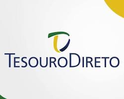

Renda fixa
Tesouro Direto
Conheça como investir em títulos públicos e quando essa alternativa pode ser ideal para sua carteira.
Mídia

O que é?
O Tesouro Direto permite que pessoas físicas comprem títulos emitidos pelo Tesouro Nacional. Em outras palavras, você empresta dinheiro ao governo em troca do pagamento de juros no futuro.
Como funciona?
É necessário ter conta em uma corretora ou banco habilitado. Cada título possui vencimento e forma de rendimento, e é possível vender antes do prazo, mas isso envolve marcação a mercado, o que pode gerar ganho ou perda.
Pontos positivos
- Segurança alta, pois os títulos são garantidos pelo governo federal.
- Acessibilidade com valores iniciais baixos.
- Diversidade entre Selic, Prefixado e IPCA+.
- Transparência sobre custos e prazos.
Pontos negativos
- Alguns títulos podem oscilar antes do vencimento.
- Taxas e impostos reduzem o rendimento final.
- Nem sempre será a melhor opção frente a outros investimentos, dependendo do cenário.
Fique atento: títulos indexados à inflação protegem o poder de compra, mas investir com horizonte é essencial para manter a vantagem.